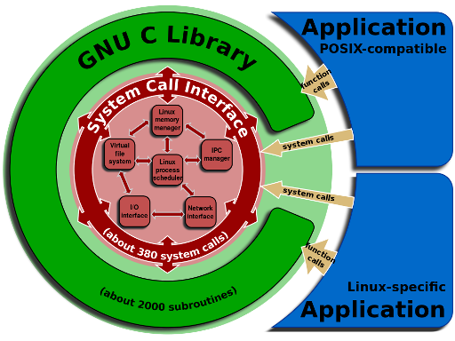

Uma Biblioteca da Linguagem C é composta por dois tipos de arquivos:
Por exemplo, suponha um cabeçalho com as definições das funções de E/S. Quando um programa precisa acessar um arquivo, este cabeçalho é incluido no código. O cabeçalho será importante para o compilador encontrar todas as referências feitas no programa C. Mas na hora de gerar o arquivo executável, o compilador incluirá o objeto pré-compilado correspondente.
A história da linguagem C pode ser resumida nas seguintes fases:
A GNU C Library, ou glibc, é a biblioteca padrão C do projeto GNU.
A glibc adota vários padrões como C11 para a linguagem C e POSIX.1-2008 (Portable Operating System Interface) para os cabeçalhos do sistema operacional. Portanto, a glibc possui a implementação de diferentes propostas para a bibliotecas C.
Outra interessante biblioteca C do projeto GNU é a gsl (GNU Scientific Library). Esta biblioteca fornece mais de mil funções matemáticas para trabalhar com números complexos, álgebra linear, vetores, matrizes, números aleatórios, etc.
O kernel do Linux é escrito na linguagem C com algumas seções escritas na linguagem assembly (determinadas funções exigem o uso das instruções intrínsecas do processador como, por exemplo, boot, interrupções e exceções). Existem dois tipos de API (application programming interface) no kernel:

Fonte: http://commons.wikimedia.org/wiki/File%3ALinux_kernel_System_Call_Interface_and_glibc.svg
A glibc e o gcc são, por padrão, a biblioteca C e o compilador C do Linux: usados tanto por quem desenvolve o Linux, quanto por quem usa o Linux como ambiente de desenvolvimento. Para saber a versão da glibc que você está usando, basta digitar
ldd --versionE para saber a versão do gcc digite
gcc --version
A diretiva de compilação <include> é usada para incluir um cabeçalho (de qualquer biblioteca C) em um programa C. Na realidade, a glibc é pré-compilada e é ligada ao executável do seu programa pelo ld-linux.so (este programa acha e carrega as bibliotecas solicitadas).
No Linux, os cabeçalhos da biblioteca C costumam ser instalados em /usr/include, enquanto os cabeçalhos do kernel são colocados no diretório /usr/src/<versão do Linux>/.
No Linux, uma biblioteca pode ser
Os binários das bibliotecas compartilhadas do sistema ficam em /lib, enquanto os binários das bibliotecas dos programas dos usuários (não essenciais ao sistema) ficam em /usr/lib ou /usr/local/lib.
A melhor forma de entender como funcionam as bibliotecas no Linux é através de um exemplo. Em primeiro lugar, vamos definir um cabeçalho (header) que terá a declaração das funções. Vamos chamar este cabeçalho de nova_bib.h.
#ifndef _NOVA_BIBLIOTECA
#define _NOVA_BIBLIOTECA
#include <stdio.h>
int fatorial(int);
int fibonacci(int);
#endif
Inicialmente, o cabeçalho verifica se a macro _NOVA_BIBLIOTECA ainda não foi definida no código. Se não foi, entã a macro é definida e o resto do código é lido. Se já foi definida, o resto do código é ignorado. Isto evita mútiplas definições da mesma biblioteca (cada cabeçalho precisa ter um nome diferente no início do código). Na terceira linha, é incluído o cabeçalho stdio.h que contém funções, macros e tipos de dados necessários para as operações de E/S como, por exemplo, a função printf( ). Em seguida são declaradas duas funções, fatorial( ) e fibonacci( ), que recebem um parâmetro inteiro e retornam um valor inteiro. A última linha define o término da macro _NOVA_BIBLIOTECA.
Em segundo lugar, vamos criar o arquivo nova_bib.c com as funções fatorial( ) e fibonacci( ). Note que o novo cabeçalho é incluido na primeira linha. Em seguida, temos os códigos das duas funções.
#include "nova_bib.h"
int fatorial(int num)
{
int i;
int fat = 1;
for (i = 2; i <= num; i++)
fat = fat * i;
return fat;
}
int fibonacci(int num)
{
int i;
int fib = 0;
int fib_a = 0;
int fib_b = 1;
for (i = 2; i <= num;i++)
{
fib = fib_a + fib_b;
fib_a = fib_b;
fib_b = fib;
}
return fib;
}
Em terceiro lugar, vamos definir o arquivo teste_lib.c que chama as funções da biblioteca (poderia ser apenas uma das funções). Inicialmente é incluido o cabeçalho nova_bib.h que possui as funções fatorial( ) e fibonacci( ). Note que o cabeçalho está entre aspas. Isto significa que o sistema vai primeiro procurar o arquivo no diretório corrente e depois, se não encontrar o cabeçalho, vai percorrer a lista dos diretórios fornecida. Quando se usa "<" e ">" no lugar das aspas, o cabeçalhos é procurado primeiro na lista. Note também que o cabeçalho stdlib.h que possui a função atoi( ) (converte uma string em um inteiro) não é especificada. Isto ocorre porque o compilador a inclui automaticamente.
Quando o usuário executar o programa teste_lib.c, ele deverá informar um número. Se o número é fornecido na linha de comando, as funções fatorial( ) e fibonacci( ) são chamadas e o número recebido é passado como parâmetro. Note que o programa assume que foi passado um parâmetro numérico, quando o correto é verificar o tipo de parâmetro passado antes de chamar as funções.
#include "nova_bib.h"
int main(int argc, char *argv[])
{
int num;
if (argc != 2)
{
printf("Forneca um numero\n");
return 1;
}
else
num = atoi(argv[1]);
printf("\n*** fatorial\n");
int fat = fatorial(num);
printf("Fatorial de %d = %d\n", num, fat);
printf("\n'*** fibonacci\n");
int fib = fibonacci(num);
printf("Soma dos %d primeiros numeros de Fibonacci = %d\n\n", num, fib);
}
A seguir, vamos ver como gerar o executável com uma biblioteca estática.
gcc -c nova_bib.c -o nova_bib.o
ar rc libnova_bib.a nova_bib.o
gcc teste_lib.c -o teste_lib -L. -lnova_bib
gcc teste_lib.c -o teste_lib -L. biblioteca
ldd teste_libA saída abaixo mostra que estão sendo usadas três bibliotecas na execução do arquivo teste_lib (além da biblioteca estática libnova_bib.a).
linux-vdso.so.1 => (0x00007ffffade4000)
libc.so.6 => /lib/x86_64-linux-gnu/libc.so.6 (0x00007fe1611d3000)
/lib64/ld-linux-x86-64.so.2 (0x00007fe1615bc000)
A Biblioteca Padrão C (padrão C11) é composta por 21 cabeçalhos (headers).
| Cabeçalhos | Descrição |
| assert.h | Utilizado nas depurações de programas |
| complex.h | Define várias funções para manipular números complexos |
| ctype.h | Utilizado para testar e converter caracteres |
| errno.h | Utilizado na identificação e no tratamento de erros |
| fenv.h | Define funções e macros para manipulação de ponto flutuante |
| float.h | Especifica as características do ponto flutuante no sistema |
| inttypes.h | Define funções e macros para conversão entre tipos inteiros |
| limits.h | Especifica as características dos tipos de dados (byte, char, int) |
| locale.h | Define informações sobre localização (país, língua, mensagens, moeda, etc) |
| math.h | Define várias funções matemáticas |
| setjmp.h | Permite definir "non-local jumps" (interrompe a sequência normal, executa outras tarefas e retorna ao fluxo normal) |
| signal.h | Permite definir tratamento de sinais |
| stdarg.h | Permite acessar os argumentos de uma função quando o número de argumentos é desconhecido |
| stdbool.h | Define o tipo de dado booleano |
| stddef.h | Apresenta definições de tipos padrão (muitas dessas definições são também encontradas em outros cabeçalhos) |
| stdint.h | Define o tipos de dados inteiros |
| stdio.h | Permite realizar operações de entrada/saída |
| stdlib.h | Define várias funções de propósito geral como gerenciamento de memória dinâmica, geração de número aleatório, comunicação com o ambiente, aritmética de inteiros, busca, ordenação e conversão |
| string.h | Define funções para manipulação de strings |
| tgmath.h | Define macros para uso em diversas operações matemáticas |
| time.h | Define funções para ler e converter datas e horas |
A tabela abaixo apresenta algumas funções disponíveis na glibc.
| Nome | Descrição |
| atexit( ) | Chama uma determinada função quando o processo termina normalmente |
| atoi( ) | Converte uma string em um inteiro |
| ctime( ) | Converte um tempo do Unix para um formato compreensível ao ser humano |
| exit( ) | Provoca o término do processo |
| getenv( ) | Fornece o valor de uma variável de ambiente |
| localtime( ) | Converte um tempo do Unix para um formato compreensível ao ser humano |
| main( ) | Inicia a execução do programa |
| major( ) minor( ) |
Ajudam a gerenciar o número do device |
| malloc( ) calloc( ) free( ) realloc( ) |
Aloca/libera memória dinamicamente |
| mkstemp( ) | Cria e abre um arquivo temporário único |
| mktime( ) | Converte um horário para o tempo do Unix |
| on_exit( ) | Chama uma determinada função quando o processo termina normalmente |
| perror( ) | Fornece a mensagem do último erro |
| printf( ) | Formata e imprime dados |
| sprintf( ) | Formata uma string |
| strerror( ) | Informa a mensagem de erro correspondente a um determinado código |
| strlen( ) | Fornece o tamanho de uma string |
| system( ) | Executa um comando shell |
| Nome | Descrição |
| errno | Armazena o código do último erro de um processo |
Para facilitar a portabilidade (diferentes arquiteturas e/ou versões), o Linux define alguns tipos de dados para o sistema. Na realidade, esses tipos nada mais são que tipos de dados simples (ex: int, double, float, etc) chamados por outro nome. O Linux faz normalmente a declaração desses tipos de dados no cabeçalho types.h do diretório /usr/include/sys/. Abaixo, são apresentados alguns exemplos.
| Nome | Descrição |
| blkcnt_t | Armazena o número de blocos do arquivo |
| blksize_t | Armazena o tamanho do bloco do arquivo |
| dev_t | Armazena o número do device |
| gid_t | Armazena o GID |
| ino_t | Armazena o número do inode do arquivo |
| mode_t | Armazena o tipo e as permissões do arquivo |
| nlink_t | Armazena o número de links diretos do arquivo |
| off_t | Armazena o tamanho ou o offset de um arquivo |
| pid_t | Armazena a identificação de um processo, do grupo de um processo ou de uma sessão |
| sighandler_t | Armazena um sinal |
| size_t | Armazena o tamanho de um objeto em bytes |
| ssize_t | Armazena um contador de bytes ou uma indicação de erro (negativo) |
| time_t | Armazena um horário no formato do tempo de época |
| uid_t | Armazena o UID |
O Linux também define algumas estruturas para armazenamento e recuperação de dados. Abaixo, são apresentados alguns exemplos.
| Nome | Descrição |
| acct | Armazena informações sobre processos |
| itimerval | Armazena informações sobre intervalo de tempo |
| stat | Armazena informações sobre arquivos |
| timeval | Armazena informações sobre intervalo de tempo |
| timex | Armazena informações sobre o relógio do kernel |
| tm | Armazena data e hora |
| Topo | | | Guia | | | |